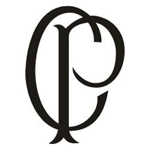
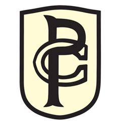
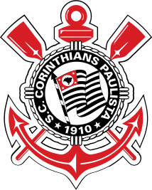

"Aqui tem um bando de louco, louco por ti corinthians, aqueles que acham que é pouco, eu vivo por ti corinthians!"
No primeiro jogo, 31 de agosto, contra o A. A. Palmeiras, um belo futebol e vitória por 2 a 0 no campo do Velódromo. Foi nesse dia que começou a nascer o Corinthians Paulista. Nascer não. O Corinthians seria fundado com ou sem a visita do clube inglês. Mas talvez o novo clube não teria um nome tão bonito como Corinthians...
No ano de 1990, o Corinthians ficou 34 partidas sem perder no Paulistão, mas deixou escapar a chance de fazer a final ao ser eliminado pelo Bragantino na 3ª Fase por 1 ponto (somente 1 time se classificava, em um grupo de 7). De bom mesmo só a conquista da Taça dos Invictos, pela terceira vez na história.
Com o mesmo time, o Corinthians foi para o Brasileirão com remotas chances de fazer um bom papel. E a estréia comprovou isso: derrotas para o Grêmio, 3 a 0, e Cruzeiro, 1 a 0, em casa.
Vicente Matheus novamente trocou a comissão técnica. Zé Maria saiu e deu lugar a Nelsinho Batista, vice-campeão paulista pelo Novorizontino naquele ano.
Pronto. O time ganhou nova cara e, com raça, chegou ao título brasileiro de 1990, o primeiro do clube.
O Corinthians entrou no ano 2000 com um único objetivo: conquistar o primeiro Mundial Interclubes da FIFA. Com sede no Brasil, foi realizado com os campeões de todos os continentes.
E o Corinthians conquista o mundo, de maneira sofrida, e se torna o primeiro (e até o final de 2005, único) campeão mundial reconhecido pela entidade máxima do futebol (ver "Títulos - Campeão Mundial da FIFA - 2000")
Nunca a Fiel imaginaria que esse seria o pior ano da história alvinegra...
O Rebaixamento para a Série B
O Corinthians inicia o Brasileirão de 2007 com boas apresentações e vitórias importantes, como os 3 x 0 no Cruzeiro, em pleno Mineirão. Na 7ª rodada, o Timão era um dos líderes do campeonato.
E chega o fatídico dia. 2 de dezembro. Olímpico lotado e todo o Brasil (inclusive torcedores do Internacional) torcem pela queda do Timão. Logo a 1 minuto de jogo, o Grêmio abre o placar, com gol de Jonas. Aos 28, ainda do primeiro tempo, Clodoaldo empata para o Timão.
Enquanto isso no Olímpico, o Corinthians não demonstrava o menor sinal de reação. 43 minutos. A Fiel já começa a chorar. 49 minutos. O juiz apita o fim do jogo. O Corinthians é rebaixado para a Segunda Divisão do futebol brasileiro.
O ano de 2012 começou com mais um "Projeto Libertadores". Os nove anteriores não deram muito certo e só trouxeram decepções e traumas.
Que, enfim, chegou. Invicta. Em cima do temido Boca Juniors. Para calar a boca de todos e acabar de vez com todas as angústias e traumas do torcedor.
Corinthians, Campeão da Libertadores da América de 2012!
A estréia do Corinthians no Mundial da FIFA seria no dia 12 de dezembro. Nove dias antes, o Corinthians embarca para o Japão, literalmente nos braços da Fiel.
O carinho e a paixão da torcida foram recompensandos: O Corinthians vence o Chelsea na grande final e é Bicampeão do Mundo!
Uma nova fase se inicia na vida do Corinthians.
Depois de inúmeros projetos e maquetes, finalmente um dos maiores sonhos do torcedor se concretizou: a construção do próprio estádio.
E que estádio. Lindo. Moderno. Sede da abertura da Copa do Mundo de 2014.
O ano começou com grandes expectativas no Parque São Jorge. Tiago Nunes assumiu o comando técnico do time com a promessa de implantar uma nova filosofia no futebol, que nos últimos 10 anos foi de valorizar a tática defensiva.
12 de fevereiro. Arena lotada. O Corinthians entra em campo com um objetivo: marcar dois gols de diferença e se classificar para a próxima fase da Libertadores. E o começo foi promissor: logo aos 8 minutos Luan abre o placar para o Timão.
No segundo tempo o Corinthians era melhor em campo, mesmo com um a menos. Mas foi o Guaraní que marcou, aos 8 minutos. Era o gol que não podíamos tomar. Agora precisávamos de mais um. O jogo iria ficar sofrido. Mesmo atacando, o Corinthians não conseguiu o terceiro gol e foi eliminado mais uma vez da Pré-Libertadores e mais uma vez para o Guaraní.
Coronavírus e a paralização das competiçõesE aí entrou em cena o mais temido dos adversários, não só do Timão, mas do mundo: a pandemia da Covid-19, causada por um novo tipo do Coronavírus, que começou na China no final do ano anterior e já começava a aterrorizar o mundo. O vírus chegou ao Brasil em fevereiro.

Desde a sua fundação até o ano de 1913, as camisas do Timão não tinham distintivo. O primeiro teve que ser feito às pressas, para a disputa da vaga na Liga Paulista. Tinha apenas as letras C e P, de Corinthians Paulista, sobrepostas.

O 2º escudo da história do Timão só foi encontrado em 2011, após ser descoberto por Celso Unzelte e David Costa. A divulgação do novo escudo ocorreu no dia 15 de julho de 2011. A mesma foto prova que no início de vida, o Corinthians usava realmente camisa na cor bege.
Em 1919, o escudo passou por outra mudança, que o tornou mais parecido com o que é hoje. Assim, um círculo preto começou a ser preenchido pelo nome completo do time, com a data da fundação e uma bandeira de São Paulo “em movimento” no meio do círculo.
O distintivo já se aproxima das características atuais: um círculo negro, com a nome completo do clube e a data de fundação. No centro, a bandeira paulista sem o rigor das 13 listras.

Com o passar dos anos, o escudo foi se refinando. A bandeira central ganhou movimento bem como foi redesenhada para respeitar a bandeira oficial do Estado. A bóia, em volta do círculo, foi disfarçada e amarras foram colocadas para completar o escudo.
A última estrela foi adicionada no final de 2005, após o título do Campeonato Brasileiro. Em 2011, todas as estrelas foram retiradas do escudo, por se acreditar na história do clube, para além de qualquer título.
No dia 26 de outubro de 2011, o Corinthians anunciou a retirada das estrelas do escudo. Foram pouco mais de 20 anos com as estrelas acompanhando o emblema alvinegro. O Corinthians jogou pela primeira vez com o novo escudo no dia 15 de janeiro de 2012, no empate em 2 x 2 contra o Flamengo (amistoso realizado na cidade de Londrina).